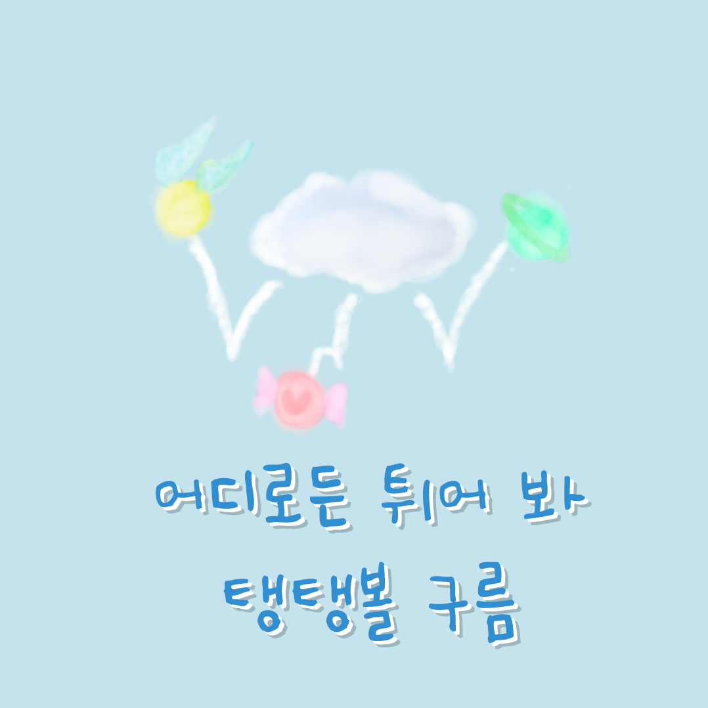

벌써부터 손에서 통통 튀기는
탱탱볼 구름을 선물 받으셨군요!
이전과 같은 방향이 아닌 새로운 방향으로
나아가고 싶다는 생각이 드시나요?
때론 남들과 다른 길을 가는 것이 두려워서
망설였을 때도 있을 거예요.
그래도 스스로를 믿고 튀어올라 봐요!
남들이 못 보던 새로운 하늘
마주할 수 있을 거예요.
가끔은 해보고 싶은 것들을
실천해보는 것은 어떨까요?
어떻게 튀어볼까 고민이라면?
아래의 영상으로!